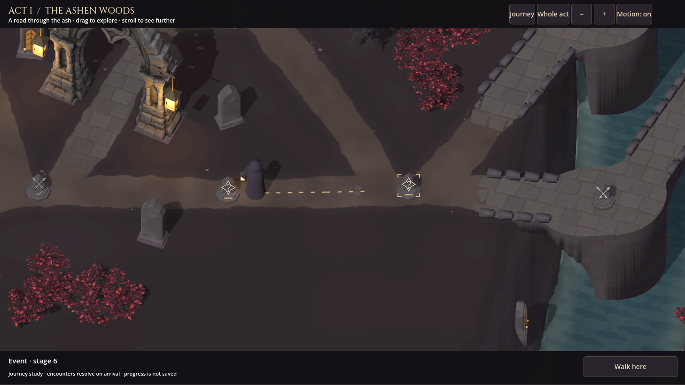
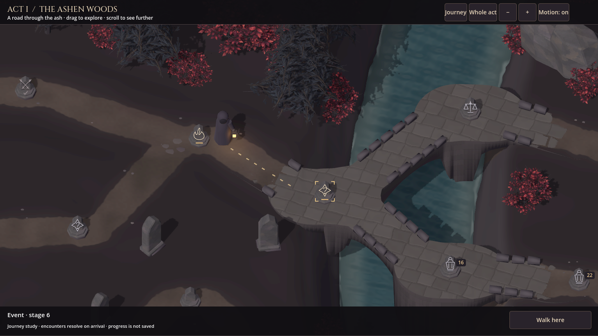

A road through the ash.
A carried ember, worn waystones and a path through the woods. This next section brings the approved landscape into motion, with clearer encounter markers and room to walk around them.
Waystones in the world
Encounter engravings sit over grounded stone bases. Warm marks identify the current position and available choices; cleared stones keep a quiet tick.
A visible journey
The traveller follows the generated road and steps around the stones. Gentle slopes and small bridge landings keep the route connected.
Space to plan
The whole-act view retains encounter symbols. Selecting an area brings it closer before an encounter can be chosen.
Watch a journey beneath the bridge
Near enough to feel the place.
Switch between native views. The phone and pad examples use their reference screen proportions; each also exercises navigation and travel.

The same rules, another landscape.
A separately generated map brings different branches, crossings and banks. The shared terrain, road, water and placement rules build this scene from its own routes.

From sample to playable section.
Act I's asset sample is approved for Step 3. This is the next playable-section candidate. The other three chapters retain their approved art directions and will follow the common foundation.
This is a recorded native preview, rather than a playable browser build. Preview encounters resolve on arrival and progress is not saved. Campaign integration and commercial delivery checks are still ahead.
What has been checked
Both landscapes pass the measured road, bridgehead, walking-clearance, camera, grounding and river checks. The closest checked dry bridge opening is 2.26 m high. All 152 generated connections across the two samples were walked by the geometry audit.
Desktop, pad and phone reference views pass native selection, keyboard input, travel timing and repeat-activation checks. Reduced motion removes the walking transition, camera easing and water animation. These reference views are rendered on the desktop; physical mobile-device performance remains to be qualified.
A denser third map failed the existing generator's old screen-layout profile before this scene could be built. That failure is preserved. The new camera and navigation profiles still need to be integrated and qualified, so this page does not claim general generator acceptance.
Implementation scope and evidence · Approved Step 3 water review